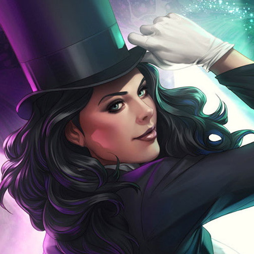

Zatanna
Zatanna Zatara, Es una Heroina, una Maga, un anterior Miembro de El Equipo y actualmente un Miembro de la Liga de la Justicia. Ella es la hija de Zatara, el huesped del Dr. Destino.Zatanna nacio el 10 de mayo ,tiene un carácter rebelde, pues ha hecho mención de que ya varias veces se ha escapado de casa gracias a su hechizo de duplicación. y sugirió que el Equipo podría "secuestrarla" para coaccionar en su participación. Ella está también muy a gusto con el coqueteo de Robin y comparte el habito de quitar prefijos de las palabras. Ella también puede ser compasiva y de confianza hacia los demás
Volver al Home